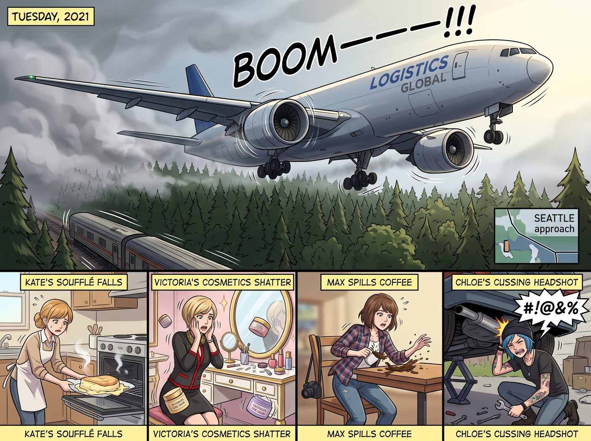
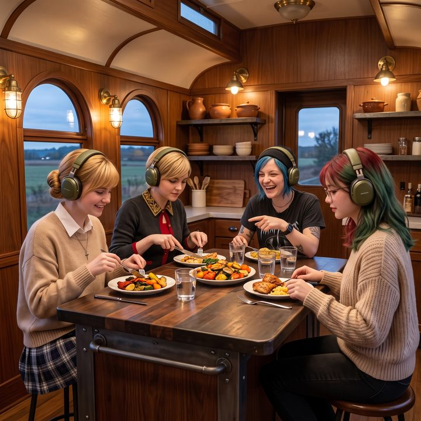

臨時航線


普吉特海灣上空原本那層憂鬱而寧靜的灰霧，在二〇二一年的某個星期二，被徹底撕裂了。
「轟————————！！！」
一架滿載著防疫物資和網購包裹的波音 777 貨機，以一種幾乎要擦過樹梢的低空姿態，咆哮著掠過二號車廂的上空。
兩具巨大渦扇引擎的轟鳴讓整個鋼鐵車廂劇烈震顫。Kate 剛烤好的舒芙蕾在烤箱裡瞬間塌陷；Victoria 梳妝台上的高級面霜震得掉在地上；Max 手裡的咖啡灑了一褲子；而正在車底下修底盤的 Chloe，則被震得一頭撞在排氣管上，爆出一長串足以讓卡車司機臉紅的髒話。
這不是偶發事件。全球供應鏈大塞車，西雅圖的進近管制臨時調整了航線，這片原本荒無人煙的森林上空，成了繁忙的低空通道。
一、被拔掉的網線
「五分鐘！這他媽才過了五分鐘，又來一架？！」Chloe 捂著額頭從車底鑽出來，指著天空怒吼，「他們是把這片森林當成甘迺迪機場的跑道了嗎？！」
車廂內，Lily 已經端坐在她的多螢幕工作站前。她的臉上沒有憤怒，只有一種令人毛骨悚然的平靜，十指懸停在鍵盤上，眼神中閃爍著久違的、名為毀滅的光芒。
「各位學姐，請忍耐十分鐘。」Lily 的聲音在下一架飛機的轟鳴聲中顯得異常清晰，「我正在起草一份緊急禁制令申請。我將把營地周圍五英里界定為瀕危北方斑點貓頭鷹的絕對繁育保護區。根據《瀕危物種法》，任何在此區域產生超過六十分貝噪音的低空飛行器，都將面臨……」
「啪！」
Max 一把按下了路由器的電源開關。
網路瞬間斷開，Lily 螢幕上的進度條卡死在百分之九十九。
「Max 學姐？！」Lily 震驚地抬起頭。
「不行，Lily。這次不行。」Max 雙手護住路由器，一臉堅決，「我們說好了要像正常人一樣生活！附近根本沒有什麼斑點貓頭鷹的巢，妳不能因為嫌吵，就去編一份保護區檔案，然後把幾家航空公司和塔台全部拖進官司裡！」
「可是……」Lily 皺起眉頭，行政大腦因為被強行斷網而感到極度痛苦，「可是這是最有效率的解決方案……」
「街頭生存法則：遇到問題，用雙手解決，而不是用鍵盤！」Chloe 提著扳手走了進來，抹了一把臉上的機油，「實習生，這次妳給老娘乖乖坐著。看我們怎麼用藍領的智慧搞定這群天上飛的鐵王八！」
二、第一回合：名媛的耳機
在被禁止使用行政黑魔法之後，四個正常人首先選擇了防禦。
Victoria 展現了老錢家族解決問題的一貫風格。她花重金透過特殊物流，弄來了五副飛行員專用的主動降噪航空耳機。
「戴上這個，整個世界都會清靜。」Victoria 傲慢地把耳機分發給大家。
確實，戴上之後，引擎的高頻噪音被過濾得乾乾淨淨。
問題是，這耳機又大又重，像兩個鉛塊夾在腦袋上。
當天晚上，車廂裡出現了極度荒謬的一幕：五個人戴著巨大的綠色耳機坐在餐桌前吃晚餐。因為聽不見彼此的聲音，她們只能用誇張的手勢和讀唇語交流。
Kate 指了指鹽罐，做了個撒鹽的動作。Chloe 以為她要胡椒，遞過去一罐黑胡椒。Victoria 想評價今天的牛排，一開口，因為聽不到自己的音量，直接變成了震耳欲聾的咆哮：「這牛排太老了！！」
最致命的是睡覺。戴著這玩意兒根本無法側躺；而一旦摘下來，每隔幾分鐘一次的低頻轟鳴，依然會讓床板跟著一起震動。
第二天早上，五個人頂著黑眼圈，精神萎靡地坐在沙發上。
「我受夠了。」Victoria 把那副價值兩千美金的耳機扔在桌上，「我感覺自己不是在過日子，而是在航空母艦的甲板上服役。」
三、第二回合：保溫杯
「物理防禦沒用，是因為低頻聲波會穿透車廂的鋼板，引起共振。」Lily 喝了一口咖啡，虛弱地舉起手，「各位學姐，如果你們允許我重新連上網路，我只需要五分鐘……」
「不准碰電腦！」
Chloe 猛地站了起來，眼睛裡佈滿血絲，卻燃燒著機械狂人的鬥志。
「既然聲波是物理攻擊，我們就用物理來打敗物理！」她轉向 Victoria，「大小姐，基金會帳上還有多少錢能動？」
「還有幾萬塊，怎麼了？」
「全拿來買重型隔音膠墊和高密度吸音棉！Max，幫我打下手！Kate，準備好黑咖啡和高熱量餅乾！」Chloe 擼起袖子，拿起電鑽，「老娘要把這節車廂變成一個真空保溫杯！」
接下來的四十八小時，二號車廂變成了一個瘋狂的改裝車間。
Chloe 和 Max 戴著防塵面罩，把車廂內部的裝飾面板一塊塊拆下來，將厚重的黑色隔音膠墊死死貼在鋼板內側，填入高密度吸音棉，再把面板裝回去。
這是一項極度消耗體力的苦力活。連平時十指不沾陽春水的 Victoria，也被逼著戴上勞保手套，幫忙遞螺絲、切海綿。
「我真不敢相信，」Victoria 一邊用美工刀割海綿，一邊咬牙切齒地抱怨，「我居然在幫一個龐克太妹做裝修。這段記憶要是被我父母知道，他們一定會直接把我的信託捐給流浪動物之家。」
「別抱怨了！把那塊邊角料遞給我！」Chloe 滿頭大汗地在天花板上打著鉚釘。
第三天傍晚，最後一道縫隙被密封完畢。Chloe 甚至在幾扇主要的車窗上加裝了雙層中空隔音玻璃。
「大功告成。」Chloe 癱倒在沙發上，氣喘吁吁。
就在這時，遠處的天空再次傳來了熟悉的低沉轟鳴聲。
所有人都屏住了呼吸。Max 緊張地握住了 Chloe 的手。
飛機到達了車廂正上方。
原本那種彷彿要撕裂鼓膜的咆哮，被厚重的隔音層擋在了外面。傳到她們耳朵裡的，只剩下一種類似遠處悶雷的嗡嗡聲。雖然還能感覺到輕微的震動，但那種令人抓狂的噪音，已經被削弱了一大半。
「成功了……」Max 驚喜地睜大了眼睛。
「萬歲！」Kate 開心地鼓起掌來。
Chloe 從沙發上彈起來，擺出一個健美冠軍的姿勢：「看到沒有！這就是藍領勞工的智慧！不需要什麼見鬼的禁制令，也不需要假扮瀕危貓頭鷹！扳手和電鑽，才是人類文明的基石！」
四、一堵牆
當天晚上，大家久違地吃了一頓沒有耳機、沒有咆哮的晚餐。
Lily 一直沒有說話。吃完飯，她走到那面被 Chloe 改造得密不透風的車廂壁前，伸出手指，輕輕敲了敲那層加厚的面板。
「Chloe 學姐，Max 學姐。」她轉過身，圓框眼鏡後的眼睛裡，流露出一種純粹的敬意，「我必須承認，我之前的思維陷入了過度依賴系統的死胡同。遇到問題時，我的第一反應總是利用權力去修改規則，或者讓製造問題的人付出代價。但妳們證明了，有時候，建立一堵堅固的牆，比發射一枚導彈更有效。」
Chloe 愣了一下，然後得意地大笑起來，走過去揉了揉 Lily 的頭髮：「怎麼，小書呆子，終於承認扳手比妳的 Excel 厲害了？」
「在局部物理防禦上，是的。」Lily 乖巧地點頭，然後又猶豫了一下，「可是……牆只能擋住我們這裡的聲音。那些飛機還是會繼續這樣飛。如果不讓我用我的方法，那一般人……遇到這種事，都是怎麼辦的？」
四個人對視了一眼。
五、普通人的方法
「很簡單。」Max 把路由器重新插上電，打開自己的筆電，「普通人會去投訴。」
她在瀏覽器裡搜尋了一下，點開了西雅圖機場公開的噪音投訴頁面。那是一個樸素到有點簡陋的表單：姓名、地址、發生時間、噪音描述，還有一個選填的備註欄。
「就這樣？」Lily 湊過去，難以置信地看著那個表單，「沒有法律依據欄？沒有證據附件的格式規範？沒有罰則條款？」
「就這樣。」Max 笑著開始填，「任何住在附近的人都可以填。填的人越多，他們就越知道這條航線吵到了誰。」
Lily 盯著螢幕看了兩秒，默默轉回自己的工作站，打開了一個檔案。
「那……這個能用嗎？」她有點不確定地說，「過去三天，我用手機上的分貝計，每次飛機經過都記錄了一次。時間、峰值分貝、持續秒數，一共兩百一十三筆。我本來是打算當作禁制令的證據……」
Max 看著那份整整齊齊的表格，忍不住笑了：「能用。這比什麼都有用。」
於是，四個人各自選了一條普通人的路。
Max 負責填機場的噪音投訴表單。她在備註欄裡老老實實地寫：「我們住在森林邊的一節改裝火車車廂裡，過去三天平均每五到八分鐘就有一架飛機低空經過，室內峰值噪音達到八十分貝以上，附上紀錄。」然後把 Lily 那份表格作為附件上傳。
Victoria 負責寫信給當地選區的州眾議員。她寫得極其得體、邏輯嚴密，把「居民生活品質」「森林生態」「疫情期間居家工作者的健康」三點列得清清楚楚，引用了 Lily 的數據，最後署上自己的全名。「別指望我用什麼家族關係，」她邊寫邊說，「這封信用的就是一個普通選民的身分。這才叫體面。」
Kate 手寫了一封信給郡議會，字跡工整溫柔，還附上了一張她畫的小插圖：一棵樹上，一隻被吵醒的松鼠捂著耳朵。
至於 Chloe，她被分配到了最艱鉅的任務：打電話到郡議員的選區辦公室。
「喂？呃，妳好。」Chloe 握著手機，臉漲得通紅，另一隻手死死攥著 Kate 寫給她的小抄，「我是住在……那個，森林邊的居民。我想反映一下，最近那個……飛機，非常……非常……」
她卡住了。車廂裡所有人都屏住呼吸，看著她拼命把那個呼之欲出的髒字吞回去。
「……非常地吵。」Chloe 終於擠出了一句完全乾淨的話，「對，非常吵。我們有數據。對，我可以寄過去。好，謝謝妳。妳也……祝妳有美好的一天。」
她掛斷電話，整個人癱在沙發上，彷彿剛跑完一場馬拉松：「老娘這輩子第一次跟公務員講了三分鐘話，沒有罵一個字。」
Victoria 冷笑一聲：「值得頒發勳章。」
六、感謝您的回饋
所有東西都送出去之後，Max 的螢幕上跳出了一行字：「感謝您的回饋，您的意見已記錄。」
就這樣。沒有回執編號之外的任何承諾，沒有保證改善的期限，更沒有人賠錢。
Lily 盯著那一行字看了很久。
「所以……」她小聲說，「我們不知道會不會有用。」
「對啊。」Max 闔上筆電，「普通人投訴就是這樣。妳做了該做的事，然後等。有時候有用，有時候沒用。」
Lily 皺著眉頭，像是在消化一個無法被量化的變量。過了一會兒，她輕輕推了推眼鏡。
「這個流程的效率極低，結果完全不可控。」她頓了頓，「但是……感覺還不錯。」
兩週後，郡議員辦公室寄來一封制式的回信，說已將居民的意見轉交給相關單位。又過了一個月，隨著港口的積壓慢慢疏通，那條臨時航線上的班次漸漸少了，夜間幾乎不再有飛機經過。
沒有人知道，那是因為供應鏈好轉，還是因為某個郡議員辦公室的桌上，真的多了一疊附著兩百一十三筆分貝紀錄的投訴。
Max 把那封制式回信、Kate 那張捂耳朵的松鼠插圖，還有一張全家戴著綠色大耳機吃晚餐的寶麗來，一起釘在了隔音面板上。
在照片背面，她寫道：
『規則第六十六條：遇到問題，先用雙手蓋一堵牆，再像普通人一樣寫一封信。黑魔法，留到真正需要的時候。』